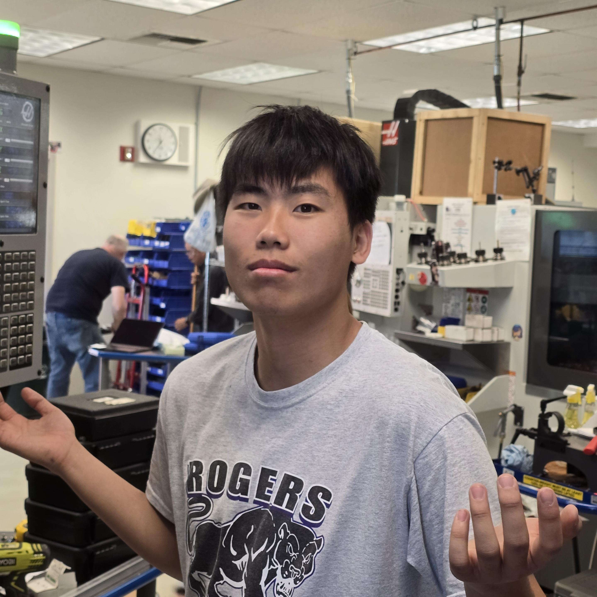

Join FRC Team 687 – The Nerd Herd
Nerd Herd FRC 687 is a school-based team based in Carson, California. We generally accept rising sophomores into our program who are currently enrolled at the California Academy of Mathematics and Science in the Long Beach Unified School District. We accept students aged 13-18 and are a year-round program with a high time commitment similar to high level sports and elite club programs.

Roughly near the end of FRC on-season (May-June), applications open for both new and returning members who will be at least Grade 10 in the following semester. Applications are done through an online form. Nerd Herd 687 welcomes anyone to join no matter their experience level.

Prior to joining Nerd Herd 687, CAMS students are highly encouraged to complete one season of FIRST through our FTC Program during their Freshman Year. For more information, please refer to the FTC League G subtab.
Subteams
Nerd Herd 687 consists of 5 main sub teams:
Assembly: Assembly is one of the most underrated sub teams out there! They make sure that the robot is always able to run at its maximum performance.
Design: This sub team makes or breaks the season and is the foundation for how well the robot is going to perform.
Manufacturing: We always make our machined parts in house. Allowing students to get the experience using TM1s, Mini Mills, Lathes, and CNC Routers.
Programming: This sub team dictates the robot from good to great. The programming team works in close coordination with the design team to ensure that they will have the necessary support to program the robot.
Admin/BUS: This Sub Teams ensures that we have the funding, sponsorships, and are the reason why we are able to keep this team alive.
687 also has numerous competition-based sub team roles:
-
Scout & Strategy: This sub team ensures that the necessary intel is gained for each team that we will be playing against and with. The information gained and the right usage of it is a big key in securing victories for the team!
-
Awards/Impact: We don’t just build robots, but we also impact the community with FIRST! This sub team holds outreach events, makes documentation, and wins us awards in competitions for qualification.
-
Spirit: This sub team ensures that the morale of our team is always at a high. No matter the circumstance, our members in this team will cheer on Nerd Herd towards its victory.
Leadership:
-
Captain: The captains oversee and manage everything that occurs in the team. Starting from the agenda, content, and organization. They are a prime example of leaders, taking initiative to ensure the team’s success. Having an excellent Captain is crucial for the success of the team.
-
Technical Managers: Technical manager is the title given to the member that has shown the most proficiency in their respective sub team. They are responsible for maintaining quality in the technical aspects.
-
Leads: Leaders are titles given to experienced individuals of their sub team that have shown enough experience to be able to teach and lead members.
-
Members: IDK
Subteam designation is chosen during the application process and students have opportunities to train interdisciplinarity until on season.
California Academy of Mathematics and Science – Getting In
The California Academy of Mathematics and Sciences (CAMS) is a small competitive magnet school located in Carson, California with a large focus on STEM-based education. With a consortium of more than 10 school districts, CAMS is open to many students, and acceptances are based on academic rigor and achievement.
Please follow this directory for more information on the CAMS application process:
Nerd Herd 687 bolsters numerous opportunities that not many other clubs are able to offer, encouraging our students to explore as many as they are interested in. Previous experience is not required.
On-Season (January – April):
The season kicks off on the 2nd weekend of January, where a new game and manual is released. The team must design, machine, assemble, program the robot until it’s ready to clash on the field. For each season, the contribution of every individual is reflected deeply in their own unique way. But we not only make robots but also create documentation and submit award applications to ensure that we are fully ready for competition!
Every week meetings are held three times with a duration of three hours, generally on Monday, Friday, and Saturday ensuring that enough time is given for each sub team to do their tasks.
Off-Season (May-December):
Offseason is a great opportunity to upscale your skill set, and those with leadership roles are doing their best to give training to members. No matter the experience one has, everyone has a role in making the robot into something we can be very proud of.